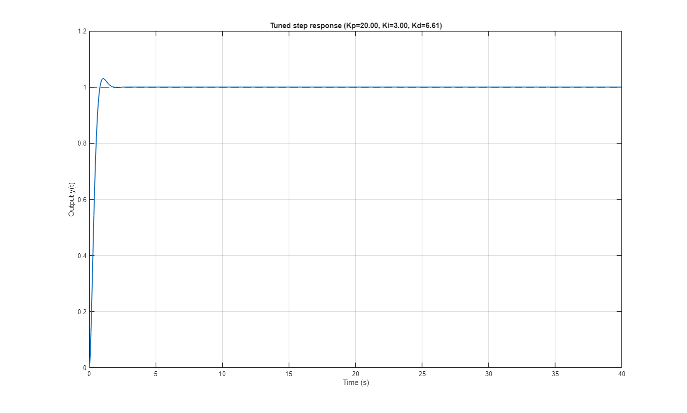

Engineering example: PID controller tuning with SOMA
Tune the three gains (Kp, Ki, Kd) of a PID controller for a lightly damped second-order plant so that the closed-loop step response is fast and well-damped. The cost is the ITAE (integral of time-weighted absolute error) of the unit-step response.
This example uses only base MATLAB: the closed loop is integrated with a fixed-step RK4 solver defined at the bottom of this file. No Control System Toolbox is required.
Contents
Problem setup
Plant: G(s) = 1 / (s^2 + 2*zeta*wn*s + wn^2), lightly damped (zeta = 0.1).
plant.wn = 1.0;
plant.zeta = 0.1;
% Decision variables: x = [Kp, Ki, Kd], each in [0, 20].
nvars = 3;
lb = [0 0 0];
ub = [20 20 20];
objective = @(x) pidITAE(x, plant);
Optimize with SOMA
opts = somaoptions('Variant', 'iSOMA', 'Seed', 2026, ... 'MaxFunctionEvaluations', 6e3, 'Display', 'iter'); [xBest, jBest] = somamin(objective, nvars, lb, ub, opts); fprintf('\nBest gains: Kp = %.4f, Ki = %.4f, Kd = %.4f\n', xBest(1), xBest(2), xBest(3)); fprintf('Best ITAE : %.4f\n', jBest);
Inspect the tuned step response
[t, y] = simulateClosedLoop(xBest, plant); info = stepInfoBasic(t, y); fprintf('Overshoot = %.1f %%, settling time (2%%) = %.2f s, steady-state error = %.3g\n', ... info.overshoot, info.settlingTime, info.steadyStateError); figure('Name', 'PID tuning result'); plot(t, y, 'LineWidth', 1.5); hold on yline(1, '--k'); xlabel('Time (s)'); ylabel('Output y(t)'); title(sprintf('Tuned step response (Kp=%.2f, Ki=%.2f, Kd=%.2f)', xBest(1), xBest(2), xBest(3))); grid on
Overshoot = 3.0 %, settling time (2%) = 1.30 s, steady-state error = 1.85e-10

------------------------------------------------------------------------
Local functions -------------------------------------------------------------------------
function J = pidITAE(x, plant) % ITAE of the closed-loop unit-step response for PID gains x = [Kp Ki Kd]. [t, y] = simulateClosedLoop(x, plant); e = 1 - y; % reference is a unit step J = trapz(t, t(:) .* abs(e(:))); if ~isfinite(J) J = 1e6; % guard against unstable gains (finite penalty) end end function [t, y] = simulateClosedLoop(x, plant) % Fixed-step RK4 simulation of the PID-controlled second-order plant. Kp = x(1); Ki = x(2); Kd = x(3); wn = plant.wn; zeta = plant.zeta; a0 = wn^2; a1 = 2*zeta*wn; T = 40; % simulation horizon (s) dt = 0.01; % fixed step t = (0:dt:T).'; n = numel(t); y = zeros(n, 1); % State: s = [y; y'; integral of error]. Reference r = 1 (unit step). s = [0; 0; 0]; r = 1; deriv = @(s) [ ... s(2); ... -a0*s(1) - a1*s(2) + (Kp*(r - s(1)) + Ki*s(3) - Kd*s(2)); ... r - s(1)]; for i = 1:n y(i) = s(1); k1 = deriv(s); k2 = deriv(s + 0.5*dt*k1); k3 = deriv(s + 0.5*dt*k2); k4 = deriv(s + dt*k3); s = s + (dt/6)*(k1 + 2*k2 + 2*k3 + k4); if any(~isfinite(s)) y(i:end) = Inf; % diverged: mark the rest as unstable return end end end function info = stepInfoBasic(t, y) % Minimal step-response metrics (overshoot, 2% settling time, ss error). yf = y(end); info.steadyStateError = 1 - yf; info.overshoot = max(0, (max(y) - 1) * 100); tol = 0.02; outside = find(abs(y - 1) > tol, 1, 'last'); if isempty(outside) info.settlingTime = 0; else info.settlingTime = t(min(outside + 1, numel(t))); end end
Migration f-count Best f(x)
0 100 0.340143
1 123 0.340143
2 130 0.340143
3 135 0.340143
4 144 0.340143
5 152 0.340143
6 157 0.340143
7 181 0.340143
8 187 0.340143
9 193 0.340143
10 204 0.340143
11 211 0.340143
12 219 0.340143
13 226 0.340143
14 232 0.340143
15 247 0.340143
16 254 0.339755
17 260 0.339755
18 271 0.217526
19 283 0.217526
20 289 0.217526
21 311 0.217526
22 317 0.217526
23 323 0.217526
24 333 0.217526
25 339 0.217526
26 348 0.217526
27 365 0.217526
28 371 0.217526
29 379 0.217526
30 394 0.217526
31 401 0.217526
32 415 0.194449
33 425 0.194449
34 449 0.194449
35 461 0.194449
36 470 0.194449
37 475 0.194449
38 490 0.194449
39 503 0.194449
40 519 0.194449
41 526 0.194449
42 532 0.194449
43 537 0.194449
44 554 0.194449
45 562 0.194449
46 571 0.194449
47 585 0.194449
48 593 0.194449
49 618 0.168307
50 628 0.168307
51 634 0.168307
52 639 0.168307
53 667 0.168307
54 701 0.168307
55 724 0.168307
56 751 0.168307
57 756 0.168307
58 784 0.168307
59 808 0.168307
60 819 0.168307
61 846 0.168307
62 860 0.168307
63 866 0.168307
64 885 0.168307
65 909 0.168307
66 916 0.168307
67 949 0.168307
68 967 0.168307
69 987 0.168307
70 1014 0.168307
71 1038 0.168307
72 1065 0.168307
73 1080 0.168307
74 1096 0.168307
75 1116 0.168307
76 1133 0.168307
77 1140 0.168307
78 1154 0.1637
79 1168 0.1637
80 1173 0.1637
81 1200 0.1637
82 1229 0.1637
83 1244 0.15102
84 1272 0.15102
85 1280 0.15102
86 1290 0.15102
87 1315 0.15102
88 1334 0.15102
89 1342 0.15102
90 1364 0.15102
91 1381 0.15102
92 1404 0.15102
93 1423 0.117377
94 1450 0.117377
95 1474 0.117377
96 1491 0.117377
97 1508 0.117377
98 1525 0.117377
99 1538 0.117377
100 1557 0.117377
101 1568 0.117377
102 1589 0.117377
103 1597 0.117377
104 1609 0.117377
105 1627 0.117377
106 1644 0.117377
107 1676 0.117377
108 1682 0.117377
109 1699 0.117377
110 1716 0.117377
111 1721 0.117377
112 1742 0.117377
113 1767 0.117377
114 1772 0.117377
115 1788 0.117377
116 1800 0.117377
117 1811 0.117377
118 1821 0.117377
119 1840 0.117377
120 1854 0.111037
121 1867 0.111037
122 1876 0.111037
123 1904 0.111037
124 1930 0.111037
125 1941 0.111037
126 1969 0.111037
127 2008 0.111037
128 2023 0.111037
129 2035 0.111037
130 2060 0.111037
131 2095 0.108357
132 2126 0.108357
133 2144 0.108357
134 2164 0.108357
135 2186 0.108357
136 2205 0.108357
137 2223 0.108357
138 2241 0.108012
139 2260 0.108012
140 2276 0.108012
141 2297 0.108012
142 2331 0.108012
143 2357 0.108012
144 2380 0.108012
145 2410 0.108012
146 2443 0.108012
147 2454 0.108012
148 2476 0.108012
149 2498 0.108012
150 2522 0.108012
151 2552 0.108012
152 2587 0.108012
153 2610 0.108012
154 2637 0.108012
155 2671 0.108012
156 2696 0.108012
157 2718 0.108012
158 2750 0.108012
159 2778 0.107058
160 2803 0.106417
161 2813 0.106417
162 2827 0.106417
163 2845 0.106417
164 2882 0.104768
165 2912 0.104768
166 2927 0.104768
167 2941 0.104768
168 2964 0.104608
169 2979 0.104608
170 3008 0.104608
171 3051 0.104608
172 3083 0.104608
173 3119 0.10417
174 3146 0.10417
175 3173 0.10417
176 3198 0.102839
177 3224 0.102839
178 3255 0.102839
179 3297 0.102839
180 3323 0.102839
181 3351 0.102125
182 3378 0.102125
183 3412 0.102074
184 3432 0.0999472
185 3456 0.0999472
186 3487 0.0999472
187 3513 0.0999472
188 3543 0.099748
189 3576 0.0993811
190 3604 0.0993811
191 3625 0.0993811
192 3647 0.0993811
193 3692 0.0993811
194 3716 0.0993811
195 3752 0.0993811
196 3783 0.0993811
197 3814 0.0993811
198 3853 0.0993811
199 3873 0.0993811
200 3898 0.0985943
201 3929 0.0985943
202 3959 0.0985943
203 3999 0.0985943
204 4030 0.0985943
205 4062 0.0985943
206 4094 0.0985943
207 4132 0.0983727
208 4161 0.0983727
209 4202 0.0983727
210 4240 0.0983727
211 4277 0.0983226
212 4306 0.0983226
213 4340 0.0983226
214 4377 0.0982763
215 4416 0.0982763
216 4441 0.0982763
217 4477 0.0982763
218 4510 0.0982763
219 4553 0.0982763
220 4591 0.0982763
221 4631 0.0982763
222 4665 0.0981269
223 4688 0.0981269
224 4724 0.0978829
225 4762 0.0978829
226 4782 0.0978829
227 4825 0.0978829
228 4846 0.0978829
229 4888 0.0978829
230 4933 0.0978829
231 4971 0.0978829
232 5011 0.0978829
233 5047 0.0978829
234 5076 0.0978829
235 5109 0.0977978
236 5144 0.0976803
237 5182 0.0976803
238 5225 0.0976803
239 5258 0.0976803
240 5293 0.0976803
241 5331 0.0976426
242 5371 0.0976426
243 5412 0.0976426
244 5454 0.0976426
245 5496 0.0976426
246 5534 0.0976426
247 5569 0.0976426
248 5606 0.0976426
249 5645 0.0976426
250 5688 0.0976426
251 5720 0.0976426
252 5753 0.0976426
253 5784 0.0976326
254 5825 0.0976326
255 5868 0.0976326
256 5906 0.0976326
257 5942 0.0976303
258 5982 0.0976303
259 5997 0.0976275
soma (iSOMA): Maximum number of function evaluations reached. Migrations: 259, function evaluations: 5997, best f(x): 0.0976275
Best gains: Kp = 20.0000, Ki = 3.0022, Kd = 6.6120
Best ITAE : 0.0976